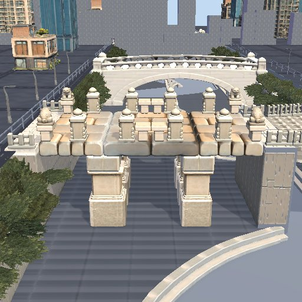
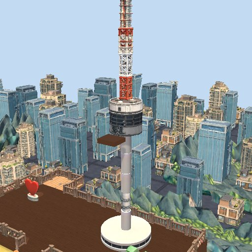
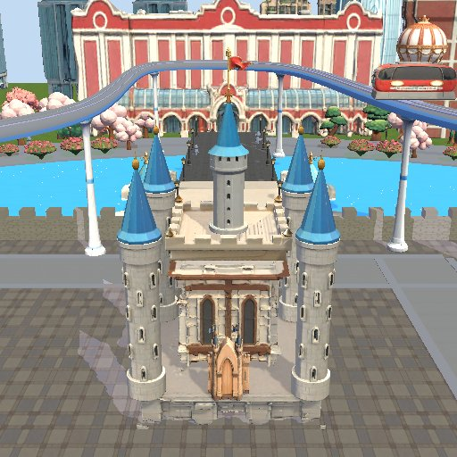
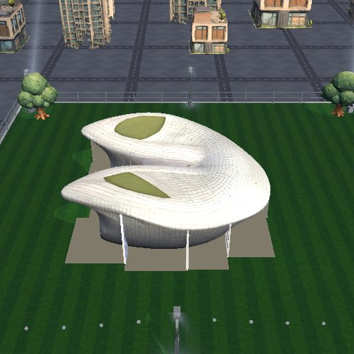
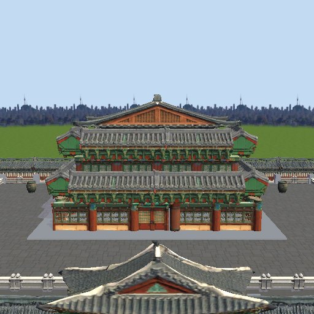
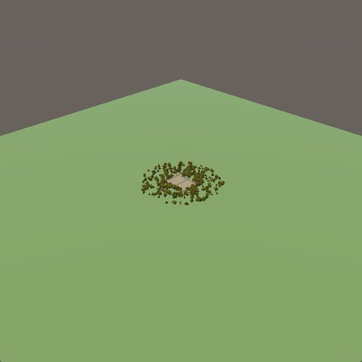
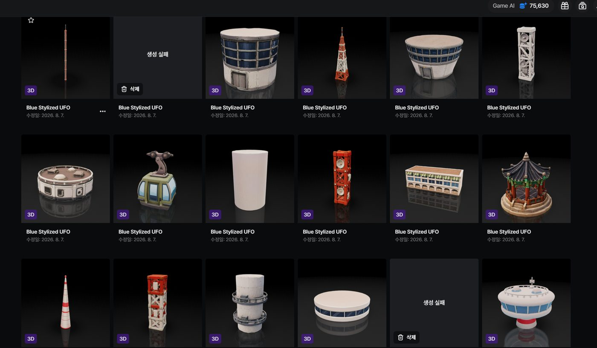
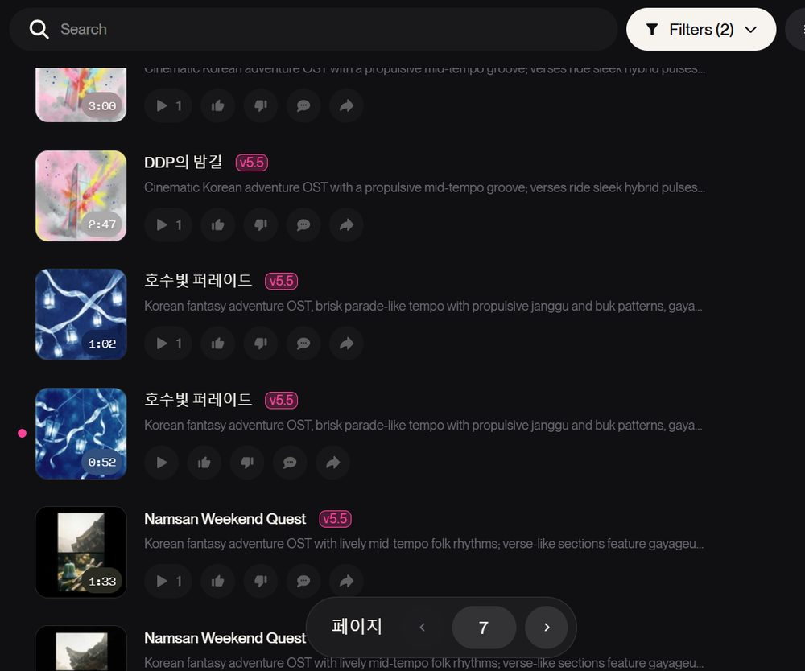
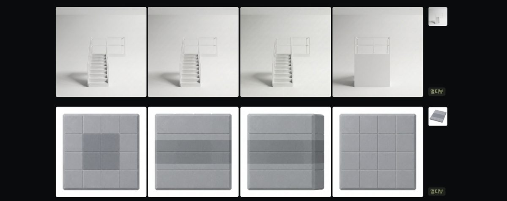

서울이 무너졌다
어느 날, 원인불명의 재난이 서울을 덮쳤다. 남산타워도, 광화문도, 서울역도… 와르르.

휴대폰의 완공 계획도를 보고 재료를 주문하면 배송 구역에 진짜 물건이 떨어진다. 들고, 던지고, 반투명 정답 위에 맞춰 놓고, 망치질. 고정 안 하면 와르르.
휴대폰으로 재료 호출
들거나 친구에게 던지기
반투명 정답 위에 딱
망치 고정 → 페인트
완성도 → 별 → 코인
남산타워도, 광화문도, 서울역도 와르르. 거리에 나붙은 긴급 모집 공고의 한 줄 — "추락 시 다치지 않는 자 우대(등껍질 보유자 등)". 어? 우리 등껍질 있는데?
어느 날, 원인불명의 재난이 서울을 덮쳤다. 남산타워도, 광화문도, 서울역도… 와르르.

그때 거리에 나붙은 공고 한 장. [서울시 명소 재건 사업] 보수 확실 보장!

"추락 시 다치지 않는 자 우대 (등껍질 보유자 등)"

등껍질 삼총사, 그 자리에서 의기투합.

그렇게 탄생한 히어로. 안전모는 썼다.

보수는 확실하다니까, 일단 짓자!
셋 다 추락엔 끄떡없지만, 현장에서 잘하는 일은 조금씩 다릅니다. 인트로에서 하나를 고르고, 나머지는 코인으로 영입하세요.

맨몸으로 벽을 기어오릅니다. 비계 없이 위층으로 직행! 공고를 제일 먼저 발견한 장본인.

등껍질로 다져진 뚝심. 무거운 기와와 석상을 들어도 걸음이 느려지지 않습니다.

쭉 뻗는 집게발. 재료를 집고, 놓고, 망치질하는 사거리가 한 칸 더 깁니다.
방을 만들 때 모드·맵·날씨를 고르세요. 맵은 랜덤으로 돌릴 수도 있습니다.
1~4명이 한 팀. 제한 시간 안에 완공 계획도와 똑같이 지으면 고득점. 맵마다 그 명소만의 기믹이 끼어듭니다. 전원 동의하면 조기 종료하고 채점.
같은 명소를 두 팀이 동시에 짓는 스피드 대결. 먼저 100% 완공하면 그 자리에서 승리, 시간이 끝나면 완성도가 높은 팀이 이깁니다.
타이머도 채점도 없이, 게임에 있는 모든 재료로 마음껏. 완성작은 기록책에 스크랩됩니다.
과거의 경복궁과 광통교, 현재의 남산타워와 롯데월드, 미래의 DDP. 실제 명소를 파츠로 분해해 맵으로 옮겼고, 맵마다 그 장소의 이야기에서 따온 기믹이 있습니다.

청계천조선 최대의 청계천 돌다리. 기둥·교각·장주 8종 파츠로 복원하는 첫 현장.

남산케이블카가 재료를 실어 오고, 높이 오를수록 돌풍이 발판을 흔듭니다. 전망대를 완성하면 엘리베이터 개통.

잠실석촌호수 위 매직아일랜드. 실제로 돌아가는 놀이기구 사이로 퍼레이드가 지나가면 길을 비키세요.

동대문곡면 건물을 슬라이스하듯 쪼갠 퍼즐. 이간수문이 주기적으로 열리고, LED 장미 정원이 밤을 밝힙니다.

경복궁화마가 하늘을 날며 불을 지릅니다. 드므에서 물을 퍼 양동이로 끄고, 하늘에서 떨어진 사방신 석상을 제자리에 놓으면 화마 봉인.

2 vs 2가운데 투명 벽을 사이에 둔 완전 대칭 공사장. 대결 모드 전용.
비와 눈엔 미끄러지고, 강풍엔 재료가 날아갑니다. 벚꽃과 단풍은 그냥 예쁩니다. DDP는 밤에 짓습니다.


옷장에서 등껍질·옷·머리띠를 갈아입히고, 기록책에서 맵별 최고 완성도와 자유 모드 작품을 모아 보세요.


캐릭터부터 맵 파츠, 목소리, BGM까지. 부족한 리소스는 AI로 보완하고, 다섯 명의 개발 규모를 AI로 증폭했습니다.

캐릭터 3종과 애니메이션, 건축 재료, 배경 소품, 커스터마이징 아이템, UI까지 게임의 3D·2D 에셋 전부.
"망치 갖다줘!" 퀵챗 11종을 캐릭터별 목소리로. 채팅 없이도 현장이 시끌시끌.

맵마다 어울리는 BGM. 궁궐엔 국악풍, DDP엔 미래풍, 마감 직전엔 다급한 버전으로 바뀝니다.

VARCO MCP 워크플로로 에셋 생성·배치를 자동화하고, Discord QA 봇이 팀원의 버그 리포트를 바로 수정 작업으로 연결합니다.